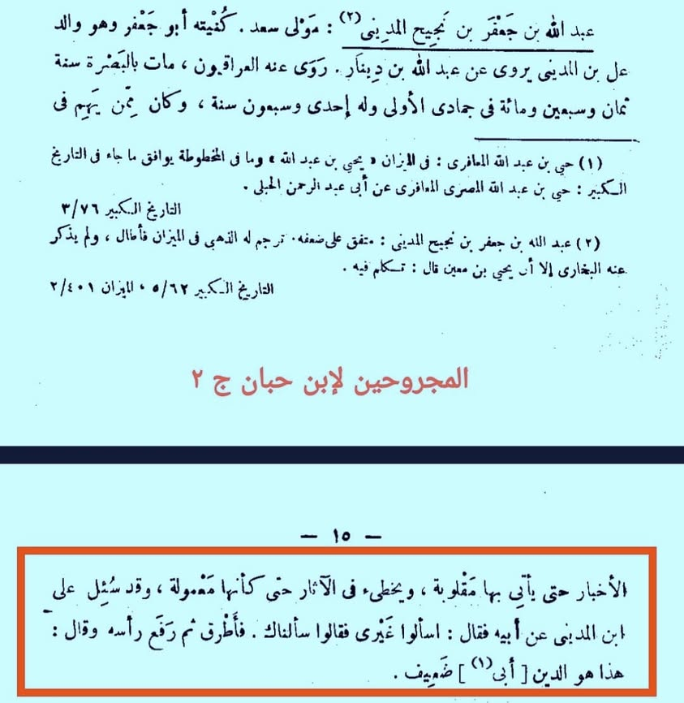
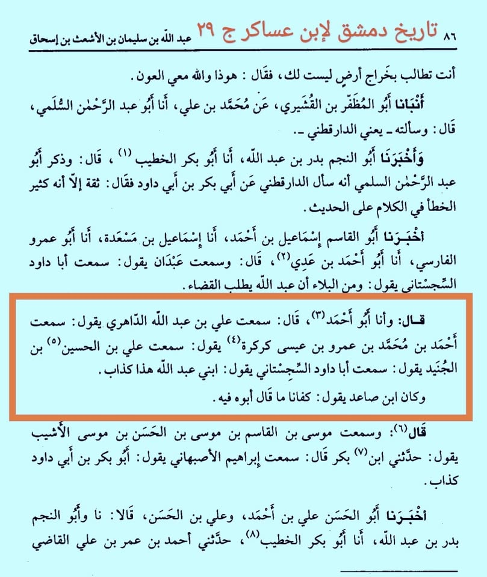

জরাহ ও তা'দিলের ইমামগনের ইনসাফ, নীতি ও আদর্শ দেখলে আমরা অবাক হতে বাধ্য। বলা হয়, এ…
২৯ এপ্রিল, ২০২৪
জরাহ ও তা'দিলের ইমামগনের ইনসাফ, নীতি ও আদর্শ দেখলে আমরা অবাক হতে বাধ্য। বলা হয়, এ উম্মাহর অন্যতম বৈশিষ্ট্য হচ্ছে ‘সনদ’, যা অন্যকোনো উম্মাহর মাঝে নেই। যে কারণে পূর্ববর্তী নাবিগনের অনুসারীরা তাদের নাবিদের বাণীগুলোর মধ্যে সহিহ ও সাকিম নির্ণয়ে সক্ষম নয়। পক্ষান্তরে শেষ নাবি মোহাম্মদ সাল্লাল্লাহু আলাইহি ওয়া সাল্লামের দ্বীনকে কিয়ামত অবধি বলবৎ রাখতে মহান আল্লাহ সনদের এক বিরাট নিয়ামত দান করেছেন। আর এ সনদকে পর্যালোচনার ক্ষেত্রে জরাহ ও তা'দিলের ইমামগনকে পক্ষপাত, খাতির কিংবা স্বজনপ্রীতি গ্রাস করতে পারে নি। তার নজির অহরহ। এখানে দু'টি উল্লেখ করছি:
★ ইমাম আলি ইবনুল মাদিনি রাহ. জগদ্বিখ্যাত হাদিসের এ সম্রাটকে তালিবুল ইলম কে না চেনে। তিনি তার আপন পিতার জরাহ করেছেন।
‘লোকজন তাঁকে তার পিতা সম্পর্কে জিজ্ঞেস করলে জবাবে তিনি বললেন, অন্য কাউকে জিজ্ঞেস করুন। তারা বলল, আমরা আপনার কাছে জানতে চেয়েছি। তখন তিনি মাথা নত করে ফেললেন। খানিকবাদে মাথা তুলে বললেন, এটি দ্বীনের বিষয়। আমার পিতা জয়িফ-দুর্বল।’
[আল-মাজরুহিন, ইবনু হিব্বান— ২/১৫]
★ ইমাম আবু দাউদ সিজিস্তানি রাহ. বিখ্যাত হাদিসগ্রন্থ সুনান আবি দাউদের রচয়িতা। পরিচয় সবাই জানেন। তিনি তাঁর আপন ছেলেকে জরাহ করে নির্দয় ভাষায় বলেন, ‘আমার ছেলে আব্দুল্লাহ কাজ্জাব-মিথ্যুক।’
[তারিখে দিমাশক, ইবনু আসাকির— ২৯/৮৬]
এমন আরও অনেক নজির রয়েছে— কোনো কোনো ইমাম তাদের আপন ভাই/ভাতিজা/চাচাকে জরাহ করেছেন। এতে তারা সম্পর্কের কোনো তোয়াক্কা করেন নাই। যার বিনিময়ে নিষ্কলুষ, নির্ভুল, সুসংরক্ষিত ও অমোঘ এ দ্বীন আমাদের পর্যন্ত পৌঁছেছে এবং কিয়ামত অবধি তা জারি থাকবে, ইনশাআল্লাহ।

